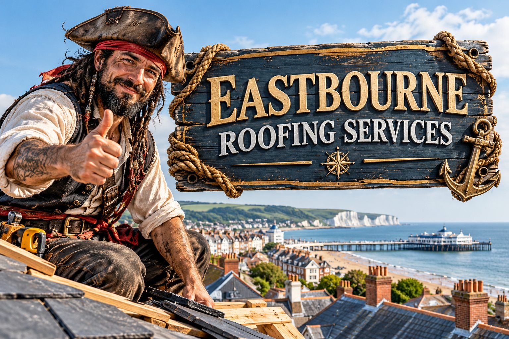

Roof Repairs
Roof leak investigations, loose tiles, damaged valleys and practical local repairs.
Explore this service →
Covering Eastbourne, Polegate, Stone Cross, Old Town, Hampden Park and nearby communities. Free quotations and drone roof inspections where suitable.
From one slipped slate to a full re-roof, see the individual service pages for what is involved and how to request a quotation.
Roof leak investigations, loose tiles, damaged valleys and practical local repairs.
Explore this service →
Traditional multi-layer felt systems, repairs, edges and drainage details.
Explore this service →
Tiled and slate roof replacement, breathable membranes, battens and ridge details.
Explore this service →
Lead flashing, party-wall junctions, chimney pointing and roof abutments.
Explore this service →
Roofline repairs, replacement guttering, downpipes and timber or uPVC components.
Explore this service →Aerial views of hard-to-see roof areas where flying is safe and permitted.
Explore this service →Urgent help for sudden leaks, storm damage and unsafe roof coverings.
Explore this service →
Clearing gutters and downpipes to reduce blockages and overflow.
Explore this service →Repairing and replacing broken or slipped slates, tiles and ridge details.
Explore this service →
Exterior finishes, decorating and general property repair work.
Explore this service →We cover the neighbourhoods below from our East Sussex work base. Choose an area to see local roof considerations, available services and how to contact us. We do not claim a separate staffed office in each area.
Roof repairs and new roofs for town-centre streets, suburban homes and coastal properties.
Roofers in Eastbourne →Roof repairs, tile and slate work, lead flashing and gutters in Eastbourne Old Town.
Roofers in Old Town, Eastbourne →Local roof leak repairs, felt flat roofs, guttering and new roofs around Stone Cross.
Roofers in Stone Cross →Pitched roofs, storm repairs, chimney flashing and roofline maintenance in Polegate.
Roofers in Polegate →Roof repairs, gutters, flat roofs and free drone roof inspections around Hampden Park.
Roofers in Hampden Park →Roof repairs, ridge work, slate and tile roofing, chimney detailing and gutters.
Roofers in Pevensey →Local roof repairs, pitched-roof maintenance, gutters and chimney leadwork.
Roofers in Westham →Roof repairs, tiled roof replacement, flat roofs and roofline work in Willingdon.
Roofers in Willingdon →Roof leaks, tile and slate repairs, roofline works and flat roofs across Langney.
Roofers in Langney →Roof repairs, guttering, flashing and exterior maintenance near Sovereign Harbour.
Roofers in Sovereign Harbour →Traditional slate and tile roof repairs, chimneys, gutters and leadwork around Meads.
Roofers in Meads →Roof repairs, new roofs, flat roofing and gutters around Hailsham.
Roofers in Hailsham →Photographs of previous work by the team. These images are examples of workmanship and do not imply every project was completed in Eastbourne.


We start with the problem you have seen: a leak, slipped tile, damaged chimney flashing or overflowing gutter. You can describe the issue and send photographs before arranging a visit.
Roof repairs, new roofs, three-layer felt flat roofing, guttering, chimney work and decorating. Our team also offers aerial roof photos when safe and permitted.
Roofing questions do not have to wait for a major leak. Ask about routine maintenance and small problems before they develop.
About drone inspections →Roofing supplies enquiries →Yes. Send the postcode, photographs if available and a description of the work so we can discuss a free quotation and any inspection requirements.
Yes. We take roofing enquiries from Polegate, Stone Cross, Eastbourne and the other East Sussex areas listed on the website. Call to confirm coverage for your specific postcode.
We offer free drone roof inspections where flying is safe, lawful and suitable for the property. Some problems still require a closer physical inspection.
Emergency roofing calls can be made 24 hours a day. Attendance and timing depend on safety, weather, workload and the property location.
We discuss tile, slate and flat-roof felt systems, including relevant leadwork, ridges, underlay and roofline details according to each roof.
The shop is an enquiry catalogue only. We do not take online payments. Prices, stock and delivery arrangements are confirmed after you enquire.
Tell us the problem and where the property is. We will respond to discuss your requirements.
Freephone: 0800 007 5438
Mobile: 07733 516907
Email: j.bpropertydevelopments01@gmail.com
24/7 emergency phone enquiries. Site visits by arrangement only.